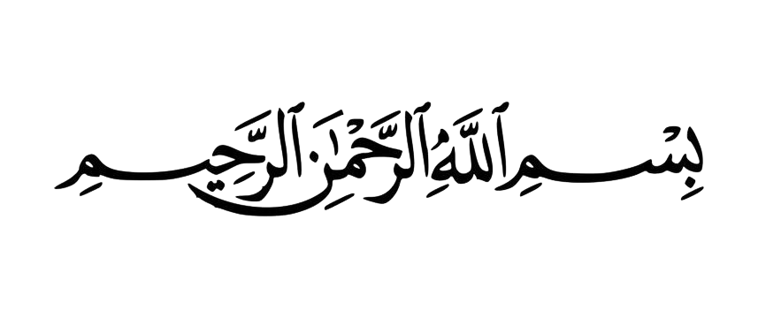
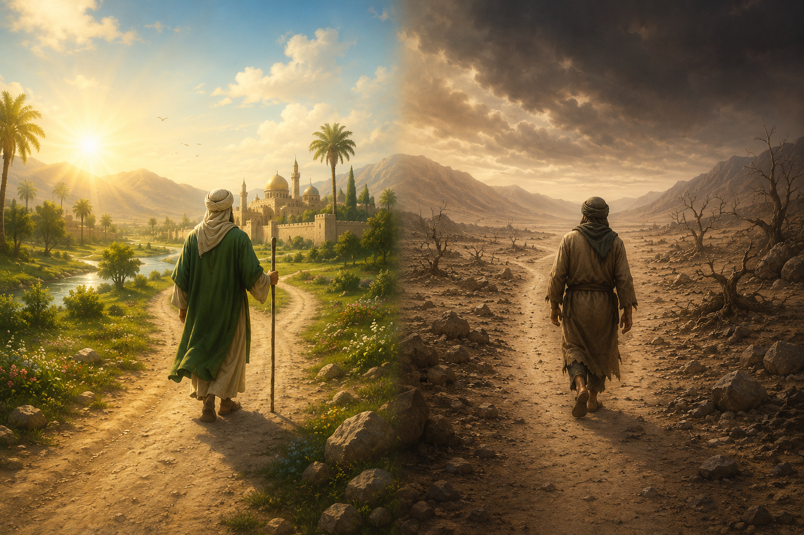
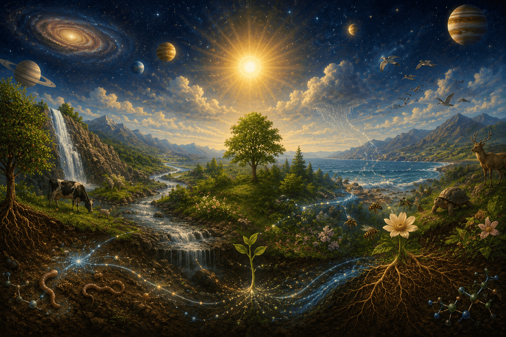

The First Word of The Words by Imam Said Nursi is short but foundational. Its purpose is to explain why Muslims begin actions with:
Bismillah-ir-Rahman-ir-Rahim
In the Name of God, the Most Merciful, the Most Compassionate
Imam Nursi argues that this phrase is not merely a religious formula, it expresses a profound truth about how human beings relate to the universe and to God.
Imam Nursi imagines two men traveling through a desert.
The First Man
The Second Man

The contrast illustrates human life, we are naturally weak.
We need
If we rely only on ourselves, we are like the second traveler.
But when we act "in the name of God":
Imam Nursi observes that everything in nature appears to serve other things:

Imam Nursi argues that these creatures are not acting independently. Rather, they work as servants of God, distributing His gifts, therefore:
When we say "Bismillah," we acknowledge that all blessings ultimately come from God.